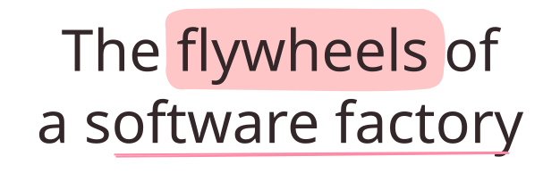

The flywheels of a software factory

Last week, I published How I built a self-improving software factory. This post is a continuation in that series.
At a gathering in San Francisco on Thursday, we were discussing software factories. Interestingly, everyone in the room had a slightly different take on what a software factory is.
One experienced engineer described it as “things we’ve all been doing with Claude Code for the last year.” A seasoned executive described it as “a text input box where you describe what software you want and a few minutes later you have that software.”
The second description points to factories like Lovable. You describe the software you want in a few sentences, and minutes later you have a dashboard, a marketing site, or a personal tool. We’ll see many more of these, and they’ll get more and more specialized.
But I’m less interested in that kind.
Factories are meant to produce products. But if the cost of producing something approaches zero, and anyone can produce it, then the thing being produced is no longer really a product. Its price will approach zero. The factory, not the output, becomes the thing people pay for.
The first description is more intriguing, but incomplete.
It points toward a different kind of factory: one operated by people who build and continually improve software products for other people. This kind of factory does not make software engineering disappear. It makes more complex and ambitious products possible, while shifting the engineering work from producing individual pieces of code to designing, directing, and improving the system as a whole.
The value of those products does not come from how difficult their code is to produce. It comes from how well the many parts of the system work together to solve a difficult problem over time.
When the engineer described it as “things we’ve been doing with Claude Code,” he was describing a real shift in how AI-native engineers work now.
As coding agents got more capable, we learnt that solving harder problems depends less on the model itself and more on how precisely we describe what we want. With a good specification, even smaller, cheaper, open-weight models can often do the work well.
That means humans spend more time specifying and giving feedback, while agents spend longer stretches implementing on their own. That creates two queues: work waiting for human attention, and work that agents can carry out autonomously.
The first responsibility of a software factory is to keep those queues moving independently. It does that by managing context and driving alignment up front on expected behavior, design trade-offs, and architectural choices.
This basic orchestration is a leap forward, but I think it will soon be table stakes. It increases throughput, but it does not by itself create a compounding advantage.
The more interesting question is whether each cycle of building and operating a product makes the next cycle better. That requires the product’s factory to learn not only from the work of its coding agents, but also from what happens when the product is used. In that sense, the factory and the product become inseparable. Improvements to the factory make the product better, while evidence from operating the product improves the factory. The advantage compounds in both directions.
Once a product and its factory are coupled in this way, the factory becomes part of what differentiates the product and gives it a competitive edge. Product builders will therefore need to build and control their own factories.
That is why I open-sourced Fluent: a reference implementation of a software factory that others can study, experiment with, adapt, and make their own.
To understand how factories improve over time, it helps to look at the reinforcing loops inside them.
Ideas
A factory can drive an iterative conversation that helps builders refine rough ideas into clear specifications, so agents build what builders intend.
Fluent gives models established thinking frameworks for challenging assumptions, uncovering the real problem, exploring alternatives, and testing the resulting idea:
human builders
→ rough idea
→ the Fluent skill helps them refine the idea using established thinking frameworks
→ the idea is challenged, assessed in the context of real code, and refined
→ a clearer idea, behavior specifications, and plan
→ coding agents build software aligned with what the builders intend
→ ...A factory can also turn an idea into running software quickly, so builders can explore it through small, working increments that sharpen the idea, reveal what to build next, and give the whole team something concrete to iterate on:
human builders
→ idea
→ Fluent
→ a small, working increment
→ builders use it, show it to others, and discuss it
→ sharper ideas and new ideas
→ ...This loop is not new. What has changed is its speed: coding agents in a software factory dramatically shorten the time from idea to working software to feedback and back again.
User experience
A factory can observe how people use the product and autonomously turn evidence of friction into improvements to the user experience:
running software
→ users use it
→ logs and events
→ agent observers notice user friction
→ Fluent identifies, implements, and deploys an improvement
→ better user experience
→ better running software
→ ...Quality and performance
A factory can monitor running software and autonomously turn errors and performance regressions into fixes and speed improvements:
running software
→ errors or slow performance
→ logs, traces, and metrics
→ agent observers detect problems
→ Fluent diagnoses, implements, and deploys a fix
→ better quality and performance
→ better running software
→ ...AI-native products
When agents are part of a product, production exposes them to a far wider range of situations than developers can anticipate. Improving their accuracy and reliability depends on learning from production traces that capture both their behavior and the inputs they receive.
A software factory can run this improvement loop autonomously, updating prompts, tuning models, and improving code while testing each change against existing evaluations to guard against regressions.
agents running inside a product
→ agent traces
→ agents and humans assess what happened
→ Fluent
→ better prompts, models, code, and tools
→ more successful agents
→ ...Production traces can also feed other loops inside the factory: experiments that compare possible improvements, evaluations that grow as new failure modes are discovered, and reinforcement-learning environments where agents can practice on realistic scenarios.
The factory itself
A factory can improve how it builds software by learning from both the changes it makes and the process it uses to make them.
In Fluent, every change is independently tested and reviewed by Reviewer agents with different specialties. A Learner agent looks at their feedback and saves useful lessons for future work:
coding agents working through Fluent
→ code changes and execution traces
→ independent tests and specialist reviews
→ revisions until the change passes
→ Fluent records reusable lessons as project Expertise
→ future design, implementation, and review improve
→ better code changes
→ ...Human reviews of the whole codebase, or of a major subsystem, create another learning loop. Fluent turns the resulting feedback into changes and carries useful lessons forward as Expertise:
human review of the codebase or a major subsystem
→ observations and feedback
→ agents in Fluent implement, test, and review the changes
→ the Learner saves reusable lessons as project Expertise
→ future agents make better code changes
→ ...These are just a few examples of flywheels a team can build into its software factory. What other loops is your team considering?
The best product teams, I believe, will treat designing and strengthening these loops as a core engineering responsibility. They will build factories that learn alongside their products, so that every turn of the loop strengthens both the product and the factory.